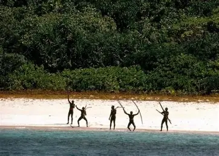

Who are the North sentinelese?

The North Sentinelese are an extremely isolated tribe who inhabit
North Sentinel Island in the Bay of Bengal, a region belonging to India. They
are widely regarded as one of the last uncontacted peoples in the world and
are believed to have lived on the island in isolation for around 60,000 years.
Over time, the tribe has become known for its strong resistance to outside contact,
with numerous recorded incidents involving hostility toward approaching outsiders.
Although brief periods of friendly contact were reported in the early 1990s, these
encounters were limited and did not lead to any lasting interaction.